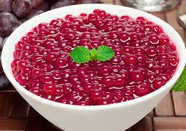

Sagu de Vinho

Ingredients
- 2 cups of sagu
- 4 cups of red wine
- sugar
- 6 cups of water
How to prepare
- Place the sagu in a bowl with the water and let it soak for 15 minutes.
- Then drain the water from the sagu and put it to boil for about 10 to 15 minutes with just water, always stirring.
- Given these 15 minutes or as soon as some of the marbles start to become transparent
- Pour the contents of the pan into a pasta colander and wash them to remove the resulting cooking goo.
- While it is dripping, put the wine, sugar and a cup of water in the pan.
- When it starts to boil, add the sagu and cook for another 15 minutes, until all the balls are transparent.
- Put it in a container and let it cool.
Source: TudoGostoso
Back to home